Locații de nuntă în județul Maramureș
- locații în director
- 33
- cu cazare în registrul SITUR
- 14
- medie ponderată Google
- 4,5 / 5
- evaluări Google
- 21.101
Cum alegi unde mergi la vizionare
Din Baia Mare puteți compara adrese din oraș cu cele din Baia Sprie și Văleni. La o locație care propune o petrecere lângă piscină, verificați delimitarea zonei pentru copii și unde se poate servi masa. Hotel Romanița este un exemplu de la care puteți începe.
Pentru Hotel Romanița, căutați Recea pe hartă înainte de a contacta șoferul. Într-o ofertă cu recepție lângă piscină, treceți distinct scaunele necesare pentru ceremonie și masa la care se așază bunicii înainte de cină. La o pensiune din Văleni puteți urmări același traseu între camere și exterior pentru a decide dacă o parte a familiei se poate caza chiar la proprietate.
Două adrese pentru o zi de vizionări
Pe hartă, între aceste două proprietăți sunt 4,0 km în linie dreaptă. Deschide indicațiile de drum din fișe ca să vezi traseul pe șosea înainte de a stabili a doua întâlnire.
- Pensiunea Maramures · Strada Principala numarul 35, 437207 Hoteni
- Pensiunea Rustic Maramureș · QWMR+QG, 437205 Ocna Șugatag
Spații exterioare menționate de operatori
- Hotel Romanița · Petrecere lângă piscină
Explorează după localitate
- Baia Mare 5 locații
- Baia Sprie 2 locații
- Borșa 5 locații
- Breb o locație
- Cavnic o locație
- Dănești o locație
- Desești o locație
- Ferești o locație
- Hoteni o locație
- Moisei 2 locații
- Ocna Șugatag o locație
- Onceti o locație
- Recea o locație
- Ruscova o locație
- Săcel o locație
- Săpânța o locație
- Sat-Șugatag o locație
- Seini 2 locații
- Văleni o locație
- Vișeu de Sus 2 locații
Toate locațiile din județul Maramureș
Ordinea ține cont de nota Google și de numărul evaluărilor. Cum calculăm ordinea
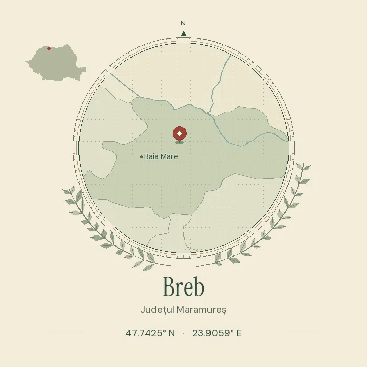
Hartă ilustrată Breb · Pensiune
Pensiunea Inima Maramureșului
Pensiunea Inima Maramureșului. Pentru o reuniune de familie poți cere o vizită în care să vezi o cameră, terasa și zona unde stau copiii în același timp.
DC14, 437070 Breb+40 726 168 271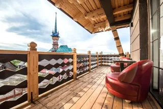
Fotografie a locației · Sursa fotografiei Săpânța · Hotel
La Conacul Vesel
Pensiune în Săpânța cu galerii din lemn și balcoane spre Cimitirul Vesel, nota 4,9. Potrivită pentru cazarea unui grup de invitați.
775, 437305 Săpânța+40 740 523 043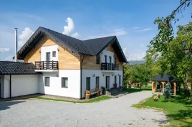
Fotografie a locației · Sursa fotografiei Moisei · Hotel
Pensiunea Agroturistica Maramures Landscape
La Moisei, vizitatorii amintesc o curte încăpătoare, locurile pentru mașini și gazde care le-au dat idei de vizitare în Maramureș.
NR.205/D, 437195 Moisei+40 755 820 904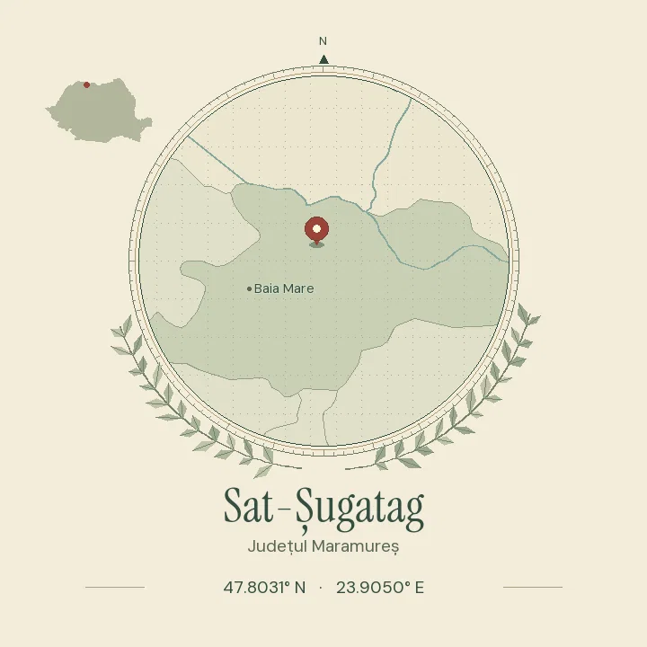
Hartă ilustrată Sat-Șugatag · Hotel
Conacul Lupilor
Pensiune pe DN18 în Sat-Șugatag cu gazde lăudate, mâncare maramureșeană și piscină caldă; 4,9 din 143 de evaluări, fără date despre evenimente.
DN18, 437208 Sat-Șugatag+40 771 210 276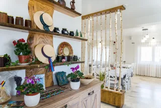
Fotografie a locației · Sursa fotografiei Desești · Hotel
Pensiunea ROCA
Pensiunea ROCA. O relatare despre pensiunea din Desești amintește pomii fructiferi din grădină, piscina interioară și două tipuri de saună, umedă și uscată.
DN18 1C, 437135 Desești+40 721 320 111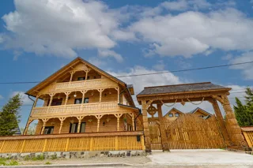
Fotografie a locației · Sursa fotografiei Ocna Șugatag · Pensiune
Pensiunea Rustic Maramureș
Pensiunea Rustic Maramureș. Un oaspete descrie Rustic Maramureș prin tradițiile și liniștea pe care le-a asociat cu șederea la Ocna Șugatag.
QWMR+QG, 437205 Ocna Șugatag+40 758 745 198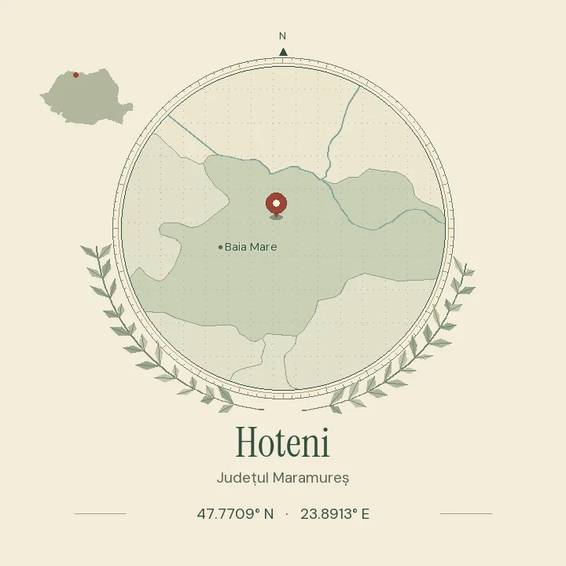
Hartă ilustrată Hoteni · Bed & Breakfast
Pensiunea Maramures
Pensiunea Maramures, Hoteni. Un cuplu revenit la Hoteni pentru a doua oară descrie o sosire târzie după drumul din Brașov.
Strada Principala numarul 35, 437207 Hoteni+40 730 106 639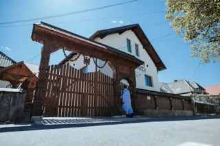
Fotografie a locației · Sursa fotografiei Onceti · Bed & Breakfast
Pensiunea La Lenuta
Pensiunea La Lenuta, Onceti. Pentru o întâlnire înainte de nuntă, puteți porni de la un fel local pe care doriți să îl împărțiți cu familia.
47°51'00.4"N 23°58'35.0"E, Oncesti Maramures, 437037 Onceti+40 740 279 408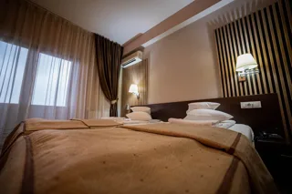
Fotografie a locației · Sursa fotografiei Dănești · Hotel
Secret Garden
Un oaspete venit pentru două zile la Secret Garden din Dănești remarcă decorațiunile de Crăciun încă de la intrarea în hotel.
Danesti 61 DJ184A, nr 61, 437328 Dănești+40 262 298 035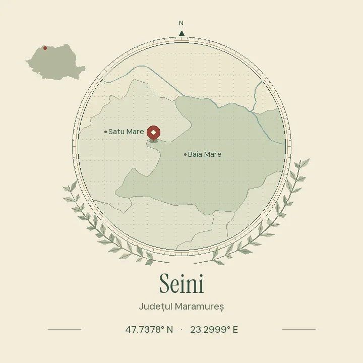
Hartă ilustrată Seini · Cazare la gazdă
Conacul Rustic
Conacul Rustic. Oaspetele care povestește despre un eveniment la Seini își amintește bruschete, preparate făcute la grătar și burgeri pentru copii.
Strada Castanilor 68, 435400 Seini
Fotografie a locației · Sursa fotografiei Baia Mare · Cazare
Hotel Magus
Hotel Magus, Baia Mare. Dacă trebuie să vă deplasați cu toții, stabiliți ora cursei de întoarcere înainte să alegeți ora cinei.
Strada Dura 4, 437345 Baia Mare+40 362 807 205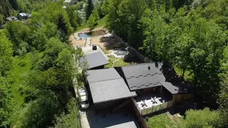
Fotografie a locației · Sursa fotografiei Borșa · Bed & Breakfast
La Conac
Un grup care a petrecut câteva zile la cabana La Conac din Borșa își amintește că a dansat, a ascultat muzică și a folosit ciubărul.
Strada Avram Iancu 77, 435200 Borșa+40 753 044 407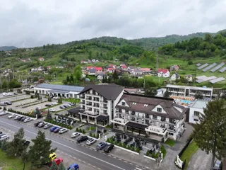
Fotografie a locației · Sursa fotografiei Vișeu de Sus · Hotel
Hotel Gabriela
Hotel cu săli de evenimente, spa și două piscine în Vișeu de Sus, cu 3.941 de evaluări. Cum e izolarea fonică și ce nu e inclus în tariful camerelor.
Str.Rândunelelor 1, 435700 Vișeu de Sus+40 262 354 380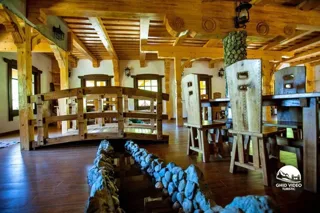
Fotografie a locației · Sursa fotografiei Ruscova · Pensiune
Conacul Drahneilor
Conac din piatră și lemn la Ruscova, cu bucătărie maramureșeană a gazdei, bălți cu păstrăvi, ciubăr și saună; 4,6 din 474 de evaluări.
Ruscova+40 727 205 005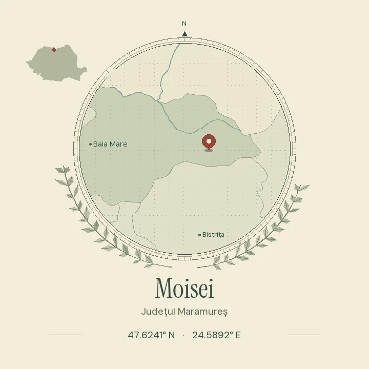
Hartă ilustrată Moisei · Hotel
Hotel Ivașcu - Moisei, Maramureș
Hotel Ivașcu - Moisei, Maramureș, Moisei. La Moisei, o familie spune că și-a prelungit șederea după cele patru nopți rezervate inițial.
Str. Izvorul Dragoș 664, 437195 Moisei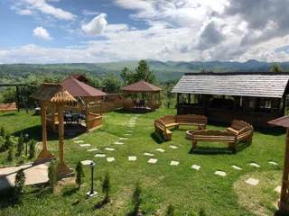
Fotografie a locației · Sursa fotografiei Zona Budești · Bed & Breakfast
Soare-n Maramures
Soare-n Maramures. O familie cu doi copii a petrecut aici un weekend ales pentru piscină, după ce a căutat o alternativă în apropiere de Baia Mare.
nr. 266, A,, DJ109F, 437070+40 757 219 419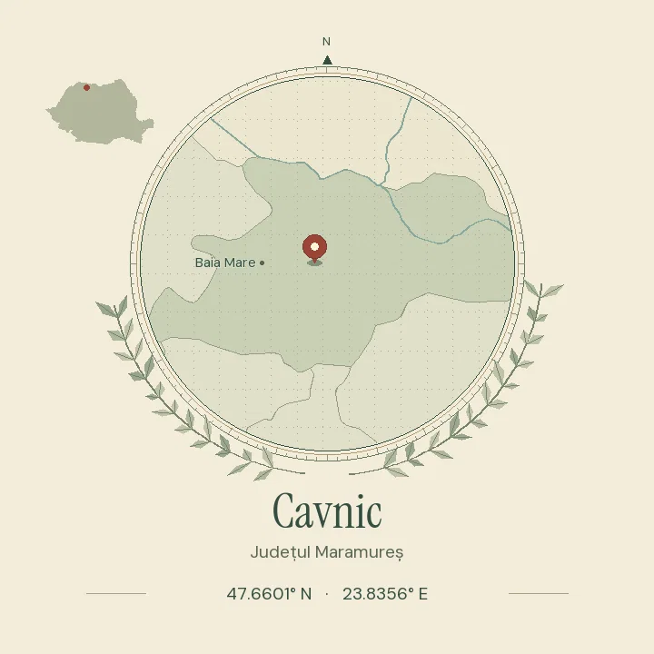
Hartă ilustrată Cavnic · Cazare în regim hotelier
Pensiunea Ana
Pensiunea Ana, Cavnic. O familie venită cu copii la Cavnic a relatat o nemulțumire legată de menținerea temperaturii preparatelor la bufet.
Strada Unirii 3, 435300 Cavnic+40 740 696 898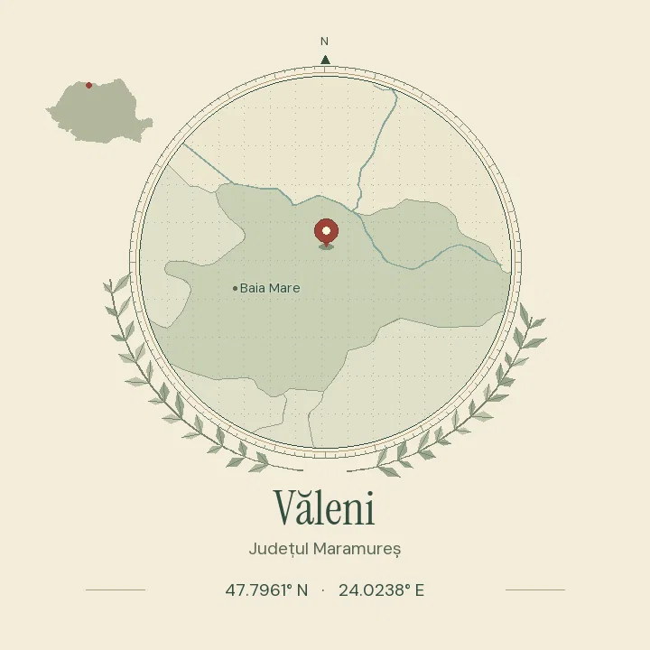
Hartă ilustrată Văleni · Bed & Breakfast
Conacul Birtoc
B&B tradițional la Văleni, Maramureș, cu foișor, pălincă la sosire și cazare de 160 RON. Fără nunți documentate: întrebări pentru gazde.
DJ185 376A, 437077 Văleni+40 760 881 223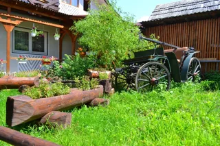
Fotografie a locației · Sursa fotografiei Vișeu de Sus · Pensiune
Pensiunea Ancuţa Mocanita Maramures
Pensiunea Ancuţa Mocanita Maramures. La Ancuța din Vișeu de Sus, un călător care traversase o bună parte din țară reține liniștea și primirea făcută de gazdă.
Strada Banat 11, 435700 Vișeu de Sus+40 745 196 150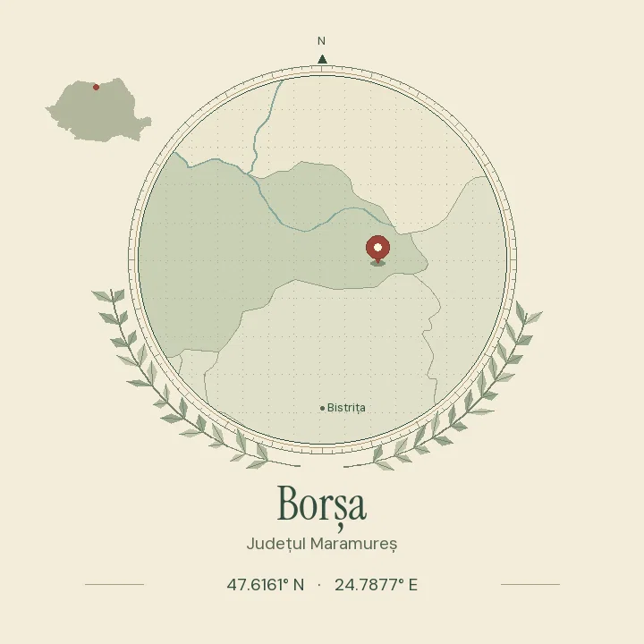
Hartă ilustrată Borșa · Pensiune
Pensiunea Timis
Pensiunea Timis, Borșa. Ai astfel două răspunsuri distincte pentru cei care vor să stea la povești și cei care se retrag devreme.
Strada Brădet, 435200 Borșa+40 741 762 453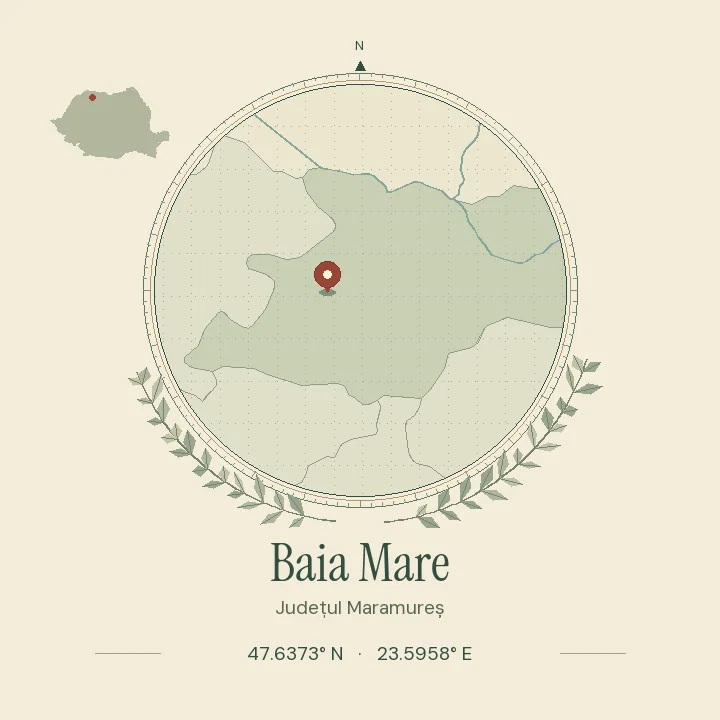
Hartă ilustrată Baia Mare · Restaurant vestic
Castel Restaurant & SteakHouse
Restaurant cu decor medieval în Baia Mare, lăudat pentru fripturi și pește proaspăt. Nu sunt date despre nunți; iată ce să întrebi.
Strada Mihai Eminescu 136 I, 430395 Baia Mare+40 747 200 026
Fotografie a locației · Sursa fotografiei Baia Mare · Hotel
Castel Transilvania
Hotel în Baia Mare cu camere cu șemineu, piscină exterioară și spa; site-ul pomenește nunți, iar 2.167 de evaluări dau media 4,5.
Strada Mihai Eminescu 136i, 430395 Baia Mare+40 362 807 814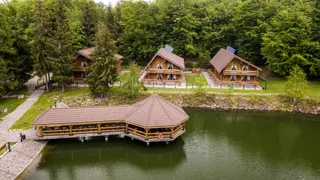
Fotografie a locației · Sursa fotografiei Baia Sprie · Hotel
Complex Hotelier Turist Șuior
Complex în Baia Sprie cu restaurant, spa, foișor și loc de joacă; 4,5 din 1.985 de evaluări, Revelion apreciat și camere de verificat.
Strada George Coșbuc 121, 435100 Baia Sprie+40 262 262 080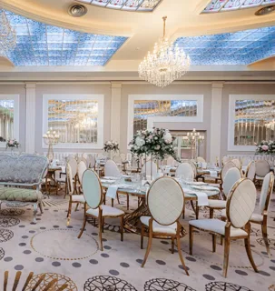
Fotografie a locației · Sursa fotografiei Recea · Hotel
Hotel Romanița
Hotel Romanița, Recea. Un oaspete cazat la Romanița își amintește piscina și drumul către micul dejun, care trecea printr-un salon mare.
JFHW+QH, DN1C, Recea+40 262 287 000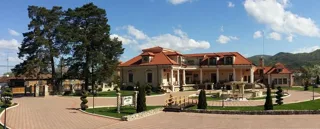
Fotografie a locației · Sursa fotografiei Seini · Hotel
Pensiunea Trei Pini
Un oaspete de la Trei Pini, cazat într-o cameră fără balcon, amintește prelata de pe terasă sub care ar fi putut rămâne în timpul unei ploi de vară.
Strada Mihai Eminescu 34, 435400 Seini+40 731 490 109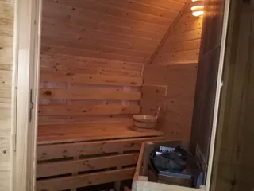
Fotografie a locației · Sursa fotografiei Baia Sprie · Pensiune
Pensiunea Verde
Pensiunea Verde, Baia Sprie. Un vizitator din Baia Sprie descrie un sejur în care pensiunea a oferit un circuit prin Maramureș cu ghid.
Strada Mihai Eminescu 55, 435100 Baia Sprie+40 753 083 841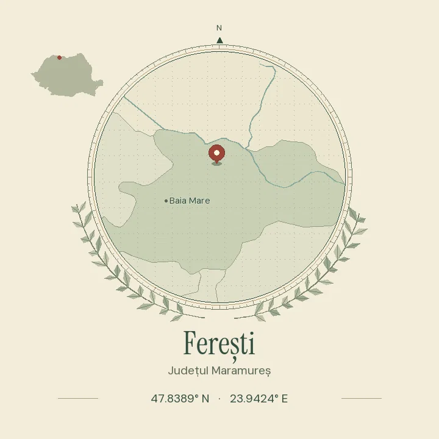
Hartă ilustrată Ferești · Pensiune
Conacul Cosaului
Conacul Cosaului. O ghidă care a însoțit aici un grup de cincizeci de turiști povestește despre cazarea grupului și mâncărurile tradiționale servite de gazde.
Feresti 181, 437162 Ferești+40 754 385 139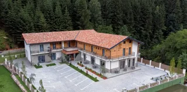
Fotografie a locației · Sursa fotografiei Borșa · Hotel
Hotel Ina - Maramures - Cazare si SPA
Hotel Ina - Maramures - Cazare si SPA. Pentru Hotel Ina din Borșa, o relatare distinge clar între existența dotărilor spa și accesul inclus în prețul camerei.
Strada Moldovei 80, 435200 Borșa+40 773 883 413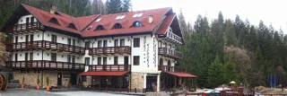
Fotografie a locației · Sursa fotografiei Borșa · Hotel
Hotel Victoria
Hotel în Borșa cu curte mare, terase și vedere la munte, lângă râul Țâșla. Site-ul pomenește nunți; întreabă capacitatea restaurantului.
Strada Strâmtura 9, 435200 Borșa+40 745 805 353
Fotografie a locației · Sursa fotografiei Baia Mare · Hotel
Hotel Mara
Cele 70 de locuri publicate pentru terasa Mara privesc servirea mesei; dacă vrei dans sau un moment muzical aici, cere o schiță actualizată cu spațiul aferent.
Bulevardul Unirii 11, 430271 Baia Mare+40 743 008 487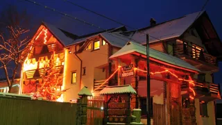
Fotografie a locației · Sursa fotografiei Săcel · Restaurant
Pensiunea Lacramioara Sacel
Pensiunea Lacramioara Sacel, Săcel. Într-un corp se află piscina și ciubărul, iar sala de mese este în celălalt.
DN17C 913, 437290 Săcel+40 744 782 847
Fotografie a locației · Sursa fotografiei Baia Mare · Hotel
Hotel Rivulus
Hotel Rivulus. Pentru o nuntă cu invitați cazați, stabilește dacă aceștia vor lua micul dejun individual sau vor avea o masă comună în dimineața următoare.
Strada Culturii 3, 430316 Baia Mare+40 262 216 302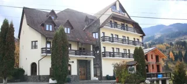
Fotografie a locației · Sursa fotografiei Borșa · Hotel
Hotel Cerbul
Hotel Cerbul, Borșa. Dacă invitații vin din alte județe, e un punct de întâlnire ușor de explicat înainte de masa festivă.
Bradet, nr. 8B, DN18, 435200 Borșa+40 756 115 424
Întrebări despre locațiile din județul Maramureș
Unde pot dormi invitații în județul Maramureș?
În registrul de cazare SITUR găsim Pensiunea Inima Maramureșului (19 locuri de cazare), Pensiunea Agroturistica Maramures Landscape (9 locuri de cazare), Pensiunea La Lenuta (12 locuri de cazare). Verifică ce camere sunt libere pentru noaptea evenimentului.
Ce spații sunt documentate pentru evenimente în aer liber în județul Maramureș?
Hotel Romanița — Petrecere lângă piscină.
Care locație din județul Maramureș are cele mai multe evaluări Google?
Hotel Gabriela are 3.941 de evaluări în profilul Google folosit la documentare. Evaluările acoperă și alte experiențe la proprietate, inclusiv vizitele fără eveniment.